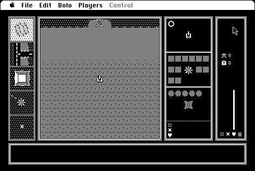

Download
bolo-start-pack-2.3.zip (750K) Bolo 0.99.7bv repackaged into a zipped hfs disk image and checksum file. The disk image can be mounted with Mini vMac.
bolo-start-pack-2.3.sit.hqx (897K) Bolo 0.99.7bv in the original format.
copyright: Stuart Cheshire
mod date: Feb 16, 2001
license: shareware
official url :
Bolo Archive
A "16 player graphical networked real-time multi-player tank battle game." Mini vMac doesn't yet support networking, but the Tutorial and Practice modes of Bolo can be used.

If you find these downloads useful, please consider helping the Gryphel Project, which hosts them.
Here are the md5 checksums for the downloads, signed with Gryphel Key 5:
--------- GRY SIGNED TEXT --------- 6d2b7796e1b8a966e7002f545b0fff7d bolo-start-pack-2.3.zip 10bf44504fb49f8f6139336059342373 bolo-start-pack-2.3.sit.hqx ------- BEGIN GRY SIGNATURE ------- Gry/4Xa8CFcUzxdN/E6s4KlH0nmQDrEH+68OlZXiIj4Cy/3DNWLbJq/veBfI1MMX +5cQbnCAAjI5nWqtRK5SpviuM1O5hdhJMSjTAr5EbXpoernHGO/tzHfddSSF1KoZ x3/a18zdgjPRHTlP615yITghSOprDIpAfTz4U7oGSsBA6PEvGu/Yjx5k9OzM1uC1 -------- END GRY SIGNATURE --------